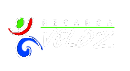

Night city build / GitHub profile
Dennis Josué Cañadas Web Developer
Me apasiona desarrollar sistemas web que aporten soluciones reales a las necesidades de empresas y usuarios. Disfruto diseñando arquitecturas backend sólidas, creando interfaces intuitivas y automatizando procesos para optimizar el trabajo diario. Mi objetivo es construir aplicaciones funcionales, eficientes y fáciles de utilizar, priorizando siempre la experiencia del usuario y la calidad del software.
Selected operations
Proyectos destacados

Sitio Web Empresarial
SJFLOORINGATL
Sitio web enfocado en mostrar información sobre sus servicios, contacto y portafolio de trabajos realizados. El sitio web es responsive y optimizado para SEO.

Gestion operativa
Recarga Veloz SA
Sistema para gestion de equipos tecnologicos, reportes, manejo de facturas y control de mantenimientos.
Tech arsenal
Stack y enfoque
Desarrollo aplicaciones web con un enfoque en la calidad, la escalabilidad y el mantenimiento. Busco crear soluciones con una arquitectura sólida, código limpio e interfaces intuitivas que faciliten tanto la experiencia del usuario como la evolución del proyecto.
Frontend
React, TypeScript, HTML, CSS y JavaScript, con enfoque en interfaces responsivas y experiencia de usuario.
Backend
Node.js y Laravel para desarrollo de APIs, lógica de negocio, autenticación y servicios REST.
Datos
SQL Server, diseño y modelado de bases de datos, consultas avanzadas y procedimientos almacenados.
Enfoque aplicado
Código mantenible, depuración, documentación, automatización de procesos y entregas iterativas.
Open channel
Hablemos de tecnologia y proyectos
Si buscas un desarrollador web para construir, mejorar o mantener sistemas web, puedes contactarme por correo o revisar mi trabajo en GitHub.